Sortwick: Waren-SortierspielRegale sortieren. Städtchen aufbauen.
Räum die Regale auf. Finde die Dreier. Erweck ein Hafenstädtchen wieder zum Leben und lern die Leute kennen, die dort wohnen.
Kostenlos fürs iPhone · Offline spielbar · Kein Konto nötig


Was ist Sortwick?
Sortwick ist ein kostenloses Waren-Sortierspiel für iPhone und iPad. Du schiebst Waren von Regal zu Regal, bildest Dreier aus gleichen Waren, um sie zu räumen, und baust mit den gewonnenen Sternen Saltwick auf, ein kleines Hafenstädtchen. Ein gemütliches Sortierpuzzle für Erwachsene, die Ordnung und eine echte Herausforderung mögen: Triple-Match-Regeln, Hunderte Level, offline spielbar.
- Kostenlos fürs iPhone
- iOS 17 oder neuer
- Offline spielbar
- 9 Sprachen
- Kein Konto nötig
So spielt es sich in 10 Sekunden
Schieb Waren zwischen den Regalen hin und her und bilde Dreiergruppen, um sie zu räumen. Jedes Level ist lösbar, und jeder Sieg bringt Sterne, mit denen du Saltwick aufbaust: Leuchtturm, Café und Laterne, eins nach dem anderen.
Ware antippen, Regal antippen
Du bewegst immer eine Ware auf ein Regal mit freiem Platz.
Drei gleiche verschwinden
Bring drei gleiche Waren zusammen, und sie räumen das Regal.
Sterne gewinnen, Saltwick aufbauen
Jedes geschaffte Level bringt Sterne für den nächsten Ort im Städtchen.
Ein Blick ins Spiel
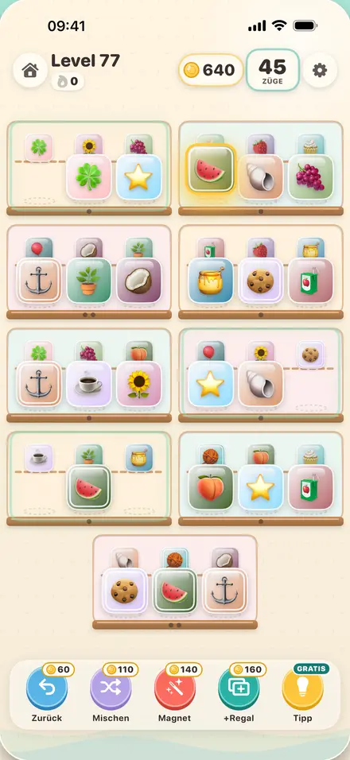
Dreier finden, Regal leeren 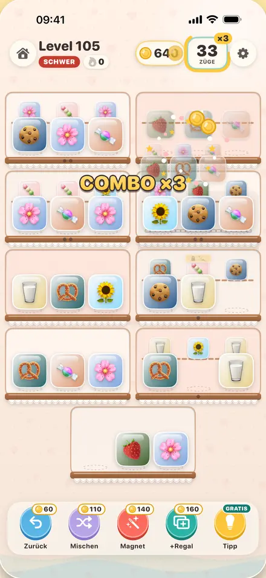
Schlag auf Schlag zur COMBO 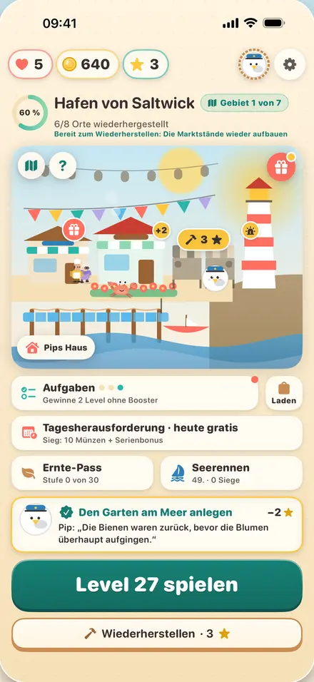
Eine Stadt, die antwortet 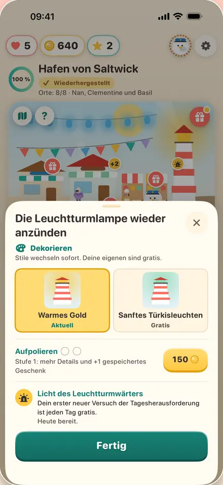
Dekorier jeden Ort nach deinem Geschmack 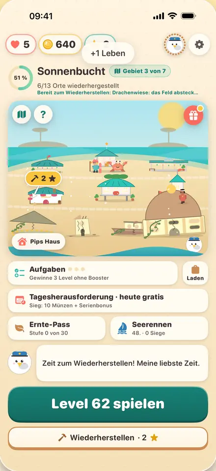
Restaurierte Orte beschenken dich 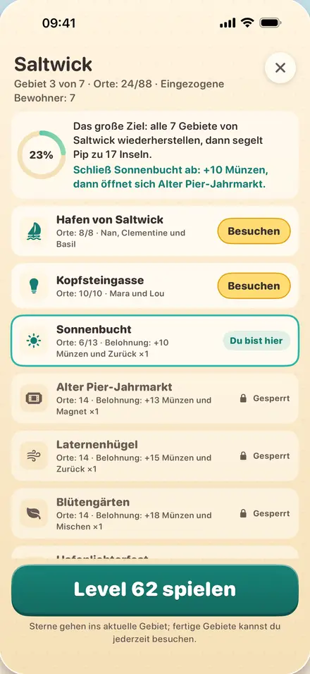
Sieben Gebiete zum Aufbauen 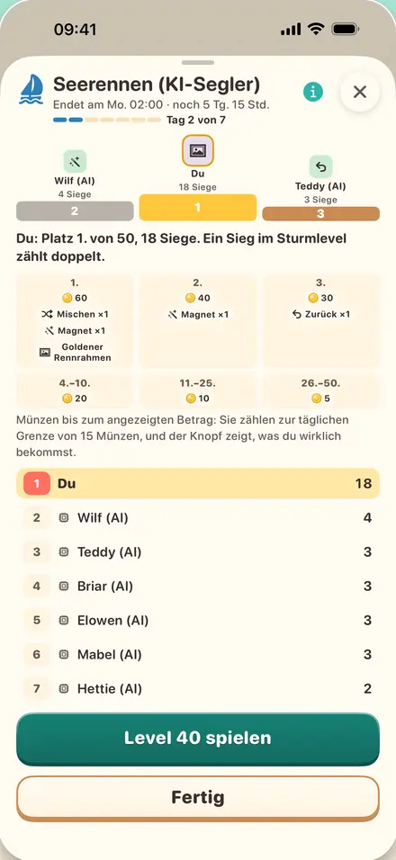
Segle jede Woche an die Spitze
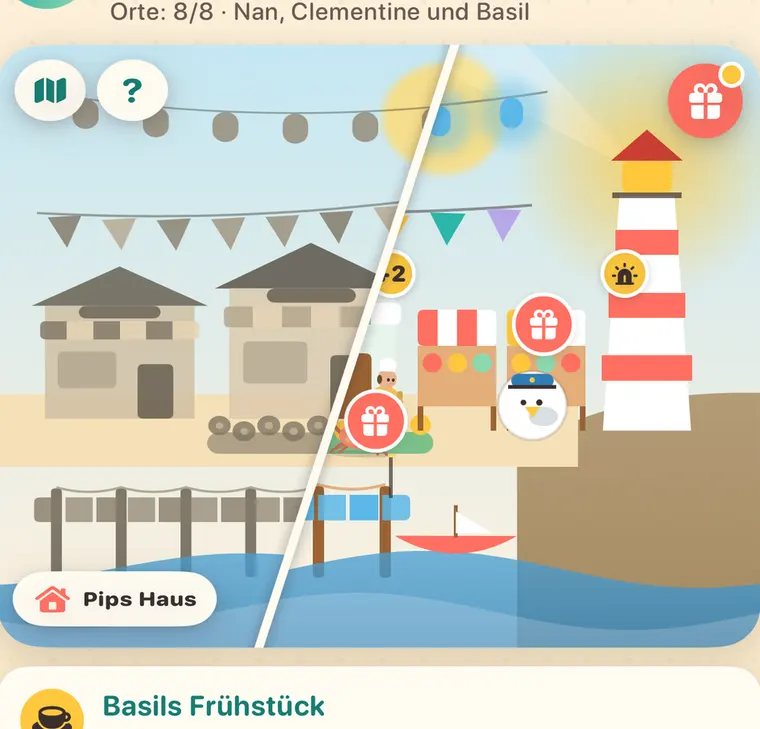
Eine Stadt, die antwortet
Sterne sammeln, Saltwick aufbauen
- Sieben Gebiete zum Aufbauen, vom Hafen von Saltwick bis zum Hafenlichterfest, danach die Inseln
- Bewohner wie Nan, Basil, Clementine und Mara ziehen ein, sobald ihr Zuhause repariert ist: Sie spazieren über die Promenade, und ein Antippen bringt dir einen Spruch
- Jede Restaurierung ist ein kurzes Gespräch: Der Bewohner spricht, Pip die Hafenmöwe antwortet
- Bäckerei und Leuchtturm tun etwas: Basils Frühstück gibt dir im ersten Level des Tages 2 Züge extra, und der Leuchtturmwärter zahlt deinen ersten neuen Versuch in der Tagesherausforderung
Lern die Bewohner kennen

Pip
Pip, die Hafenmöwe, begrüßt dich in Saltwick und hat für jeden eine Antwort.

Nan
Nan zieht wieder ein, sobald ihre Ecke am Hafen aufgebaut ist, und hat immer einen Spruch für dich.

Clementine
Clementine, die Krabbe von der Promenade, antwortet, wenn du sie antippst.
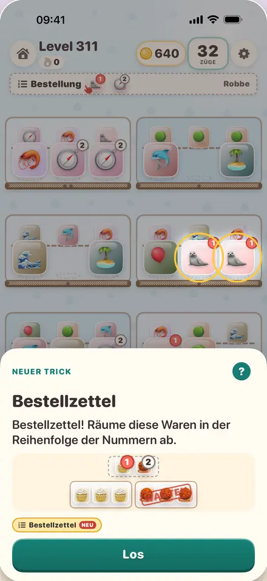
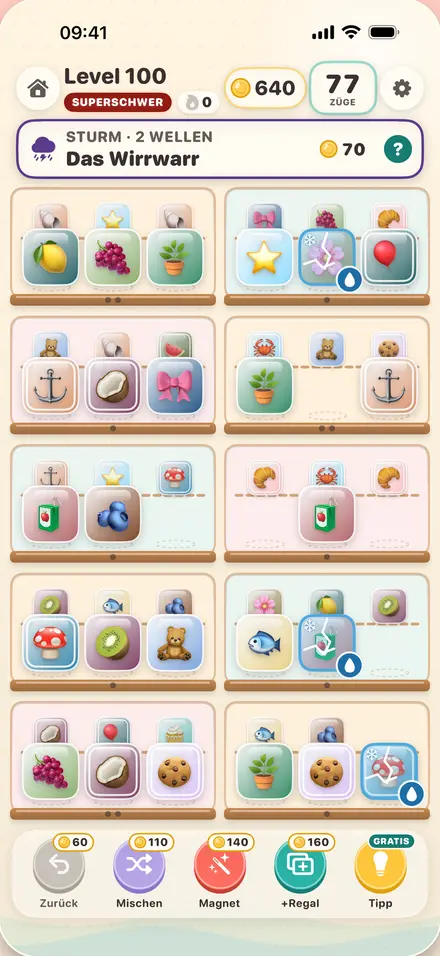
Neue Tricks, einer nach dem anderen
- Rissige Regale, Rutschen, Karussells, Theken, Schneestürme und Bestellzettel kommen zu Eis, Schlössern, Geschenken, Ketten, Kisten, Nebel, Eil-Leveln und dem Förderband dazu
- Eine Level-Start-Karte zeigt jeden neuen Trick mit den Waren des Levels, bevor du den ersten Zug machst, und die Anleitung „So wird gespielt“ hat jede Regel nur einen Fingertipp entfernt
- Tricks treten im Doppelpack auf, Varianten kommen dazu, und Doppelschichten bringen eine zweite Welle Waren aufs Brett
Eine echte Herausforderung
- Der Schwierigkeitsgrad steigt wirklich: SCHWERE Level, SUPERSCHWERE Level, Sturmlevel, Überraschungslevel und ruhige Verschnaufpausen
- Bretter als Türme, Treppen, geteilte Spalten, offene Regale und mehr
- Zurück, Mischen und Magnet als Booster, wenn du sie willst, nie aufgedrängt
Was Sortwick anders macht
Kleiner Download
Rund 27 MB. Schnell installiert, und für deine Fotos bleibt Platz.
Offline spielbar
Kein Konto, keine Verbindung nötig: im Zug, im Flugzeug, überall.
Züge statt Countdown
Level sind durch Züge begrenzt, du kannst also in Ruhe überlegen. Nur die seltenen Eil-Level laufen auf Zeit.
Keine erzwungene Werbung in den ersten 100 Leveln
Werbung zwischen den Leveln ist bewusst selten und kommt nie nach einer Niederlage. Belohnungsvideos sind immer deine Entscheidung.
Für jeden Bildschirm gemacht
Sortwick passt sich deinem Bildschirm an: dem iPhone, dem breiten Innenbildschirm eines Foldables und dem iPad.
Gemütlich und offline
- Offline spielbar, kein Konto nötig
- Tägliche Geschenke, Aufgaben, eine Tagesherausforderung, ein wöchentliches Seerennen und eine 28-Tage-Saison
- Sammle Karten im Album, schalte Erfolge frei und richte Pips Haus mit gesammelten Möbeln ein
- Kostenlos spielbar. Käufe ändern nie die Lösung eines Levels, und Albumkisten kann man nicht kaufen: Ihre Chancen werden immer angezeigt
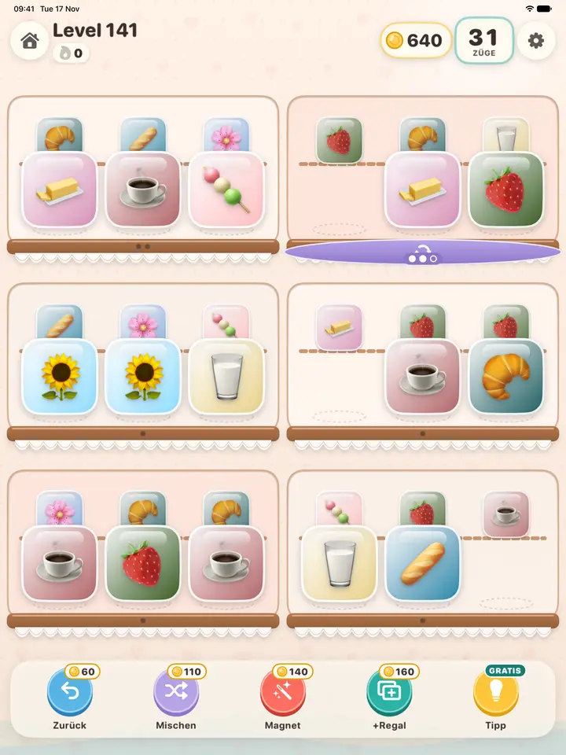
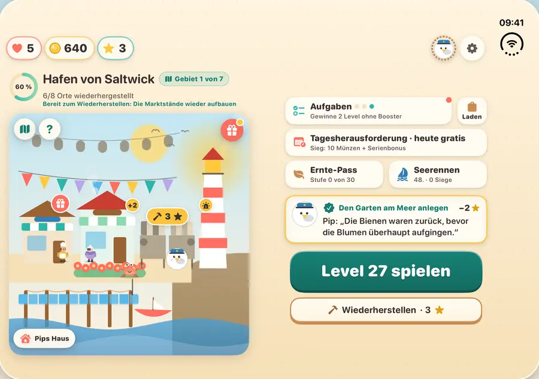
Bald verfügbar
Android: Hilf uns beim Testen
Sortwick für Android läuft als geschlossener Test bei Google Play und ist noch nicht veröffentlicht. Mach mit, spiel früher und sag uns, was du denkst.
Zum Android-TestDie Testseite ist auf Englisch.

Fragen
Was ist ein Waren-Sortierspiel?
Ein Waren-Sortierspiel (auch Goods Sort, Triple Match oder 3-Gewinnt mit Waren genannt) ist ein Puzzle, in dem du Waren zwischen Regalen verschiebst, bis drei gleiche zusammenstehen und verschwinden. Sortwick ist so ein Sortierspiel, mit einem Hafenstädtchen, das du mit den gewonnenen Sternen aufbaust.
Ist Sortwick kostenlos?
Ja. Download und Spielen sind kostenlos. Käufe sind freiwillig und ändern nie die Lösung eines Levels, und Belohnungsvideos sind immer deine Entscheidung.
Funktioniert Sortwick offline?
Ja. Level, Städtchen und Fortschritt funktionieren ohne Internet und ohne Konto. Nur Extras wie Bestenlisten, Käufe und Belohnungsvideos brauchen eine Verbindung.
Gibt es ein Sortierspiel ohne erzwungene Werbung?
In Sortwick unterbricht in den ersten 100 Leveln keine Werbung das Spiel, und nach einer Niederlage kommt nie eine. Danach ist Werbung zwischen den Leveln bewusst selten, und ein einmaliger Kauf („Werbung entfernen“) schaltet sie ganz ab.
Worin unterscheidet sich Sortwick von anderen Waren-Sortierspielen?
Level sind durch Züge begrenzt statt durch einen Countdown (nur die seltenen Eil-Level laufen auf Zeit), und jedes Level ist lösbar. Dazu kommen ein Städtchen mit Bewohnern, die antworten, ein kleiner Download von rund 27 MB und Spielen ohne Internet.
Wie funktionieren die Leben?
Ein verlorenes Level kostet ein Leben; die ersten Level kannst du frei wiederholen. Leben füllen sich mit der Zeit von selbst wieder auf. Sind alle aufgebraucht, gibt dir ein kostenloses Video eines zurück; im Shop kannst du sie für Münzen auffüllen, Hafen-VIP bringt ein zusätzliches Leben, und das Starterpaket enthält 1 Stunde unbegrenzte Leben.
Gibt es Werbung?
In den ersten Leveln gar keine. Danach sind Belohnungsvideos immer deine Entscheidung (ein Extraleben, ein paar Züge mehr, ein kostenloser Booster). Werbung zwischen den Leveln ist bewusst selten: keine in den ersten 100 Leveln und nie nach einer Niederlage. „Werbung entfernen“ (ein Kauf), Hafen-VIP und jeder Kauf in letzter Zeit schalten sie ab; die freiwilligen Videos bleiben. Direkt nach Level 1 fragt das Spiel nach deiner Werbeeinwilligung (im EWR, in Großbritannien und der Schweiz) und ob es deine Werbe-ID nutzen darf; sagst du nein, ist die Werbung einfach nicht personalisiert.
Was kann ich kaufen?
Alles ist optional. Münzpakete mit 500, 1.400, 3.100 und 8.500 Münzen; ein einmaliges Starterpaket mit 900 Münzen, 6 Boostern und 1 Stunde unbegrenzte Leben; Hafen-VIP, ein Monatsabo mit 60 Münzen pro Tag, einer Wochentruhe, einem zusätzlichen Leben und ohne Werbung zwischen den Leveln; Ernte-Pass Premium für die 28-Tage-Saison; und „Werbung entfernen“. Preise stehen in deiner App-Store-Währung neben jedem Kaufen-Button, und Apple lässt dich vor der Abbuchung bestätigen. Münzen kaufen Weiterspielen, Leben und Booster; sie ändern nie die Lösung eines Levels. In den Einstellungen kannst du ein Tageslimit fürs Ausgeben setzen.
Wie stelle ich Käufe wieder her oder kündige Hafen-VIP?
Öffne im Spiel den Shop und tippe auf „Käufe wiederherstellen“, angemeldet mit demselben Apple-Account, mit dem du gekauft hast. Hafen-VIP verlängert sich monatlich, bis du es in den iOS-Einstellungen > dein Name > Abonnements kündigst, mindestens 24 Stunden vor der Verlängerung. Erstattungen übernimmt Apple.
Nutzt es Game Center?
Ja, wenn du angemeldet bist. Dein Ergebnis in der Tagesherausforderung und deine Siege im wöchentlichen Seerennen landen auf zwei Bestenlisten, und 91 Erfolge begleiten deinen Fortschritt. Abgemeldet wird nichts gesendet, und das Spiel spielt sich genau gleich; es zeigt nie einen eigenen Anmeldebildschirm.
Welche Daten sammelt das Spiel?
Keine persönlichen Daten: Es gibt kein Konto, und wir betreiben keine Server, die deine Daten empfangen. Das Spiel sendet anonyme Spielstatistiken ohne persönliche Daten, damit wir es ausbalancieren können; in den Einstellungen kannst du sie abschalten. Der Fortschritt bleibt auf deinem iPhone und, wenn du iCloud nutzt, in deinem eigenen iCloud-Account. Werbung kommt von Google AdMob, das die üblichen Werbedaten erhält, personalisiert nur mit deiner Erlaubnis. Game-Center-Ergebnisse und Käufe verarbeitet Apple. Die Details stehen in der Datenschutzerklärung.
Welche Geräte und Sprachen?
iPhone und iPad mit iOS 17 oder neuer. Auf Deutsch, Englisch, Französisch, Spanisch, Italienisch, Portugiesisch (Brasilien), Rumänisch, Japanisch und Koreanisch.
Bereit, ein paar Regale aufzuräumen?
Kostenlos im App Store. Pip wartet am Hafen.